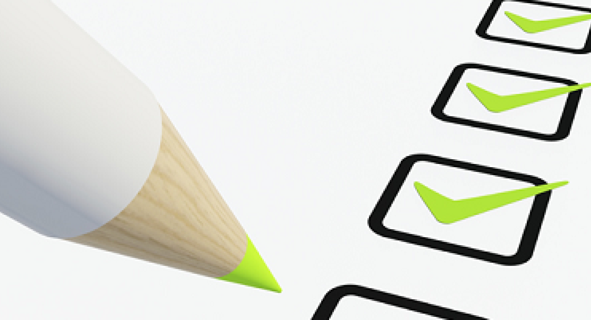

Hoe maak je een website
Om een website te maken moet je een heel proces volgen. Het begint allemaal met het ontwerpen van je website.
Je tekent dan bijvoorbeeld een kladversie van je website op papier waar nog helemaal geen inhoud bij zit.
Vervolgens kan je doormiddel van tools op de computer een pagina maken met dummy tekst en dummy foto's.
Later ga je de website inrichten, vorm geven en je website testen. Dit is een heel proces wat ik ook heb gevolgd bij deze website.
Je kunt hieronder zien wat voor processen en producten je moet maken bij het maken van een website.
Producten Van Het Proces
- Interaction Design - Dit is het ontwerpen van een interactieve ervaring tussen gebruiker en systeem.
- Paper protoyping - Dit is een kladversie van je website op paier. Dit is de 1e stap van het proces.
- Sitemap - Een sitemap is een lijst van alle pagina's op een website. Een sitemap wordt grafisch weergeven.
- Wireframing - Dit is een beeld van je website. Je hebt low,mid en high fidelity afhankelijk van de lay-out.
- Moodboard - Een moodboard geeft de stijl van je website weer aan de hand van kleur, foto's en letertypes.
- Figma - Figma is een handige tool om een hoge kwaliteit wireframe te maken met plaatjes en interacties.
- Grafische ontwerpprincipe - Deze ontwerpprincipes zijn de grafische richtlijnen die je aanhoud in je website.
- Accessibility principes - Dit zijn richtlijnen of technieken die ervoor zorgen dat je website goed toegankelijk is.
- HTML Template ontwikkeling - HTML is de code die achter de website zit. Doormiddel van HTML bouw je een website.
- Responsive Web Design - Dit is een toepassing zodat je website er goed uit ziet op elk formaat zoals telefoon en computer.
- Usability Testing - Je moet je website testen om te kijken of gebruikers bijvoorbeeld goed kunnen navigeren in je website.
- DNS en uploaden naar het internet - Je moet je website uiteraard uploaden naar het internet zodat iedereen het kan zien.
